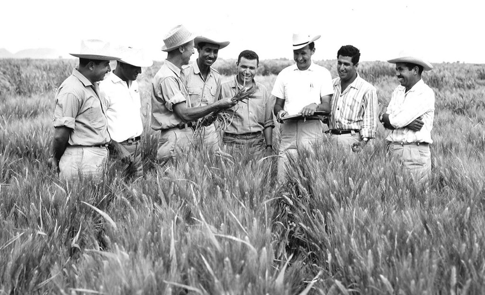

Dr. Norman Borlaug
The man who saved a billion lives

Timeline of Dr. Borlaug's Life
- - Born in Cresco, Iowa
- - Leaves his family's farm to attend the University of Minnesota, thanks to the National Youth Administration
- - Stops school to save money, works in Civilian Conservation Corps
- - Finishes university, takes job in US Forestry Service
- - Marries Margret Gibson; returns to school inspired by Elvin Charles Stakman
- - Works in military lab projects during WWII
- - Receives Ph.D. in Genetics and Plant Pathology
- - Heads new plant pathology program in Mexico; breeds 6,000 disease-resistant wheat strains
- - Discovers a method to grow wheat twice per season
- - Crosses dwarf wheat with high-yielding American breed, providing 95% of Mexico's wheat
- - Brings high-yielding wheat to India to mitigate starvation
- - Receives the Nobel Peace Prize
- - Helps seven African countries increase maize and sorghum yields
- - Becomes distinguished professor at Texas A&M University
- - Advocates GM crops to double world food supply by 2050
- - Passes away at the age of 95
"Borlaug's life and achievement are testimony to the far-reaching contribution that one man's towering intellect, persistence and scientific vision can make to human peace and progress." — Indian Prime Minister Manmohan Singh
If you have time, you should read more about this incredible human being on his Wikipedia entry.